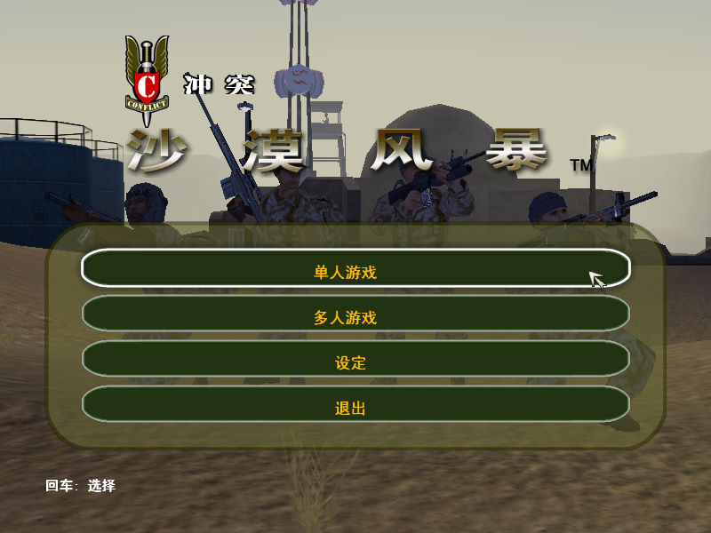
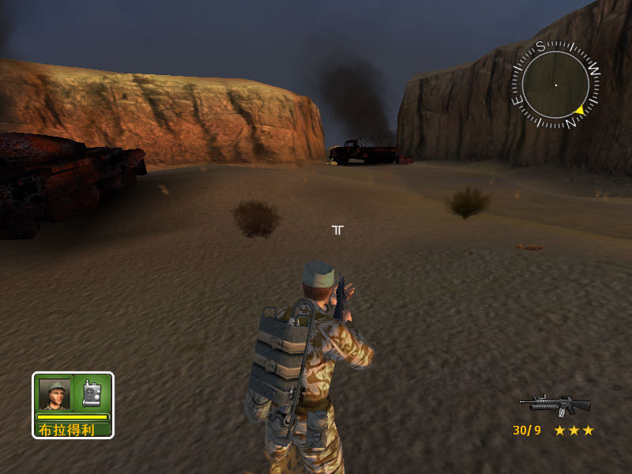

名稱：衝突：沙漠風暴 (Conflict: Desert Storm，簡中／英文版)
簡介：Pivotal 2002年出品的第三人稱戰術射擊遊戲，由SCi和Gotham代理發行，2003年時由
交大銘泰簡中化並代理發行 [待補]。


保護：英文版為光碟SafeDisc 2.70，簡中版為光碟，破解碼：
DS_CH.exe
85 C0 75 24 8B F4 6A 00
-- -- EB -- -- -- -- --
備註：將CDS.bin更名為CDS.exe，即變回英文版。